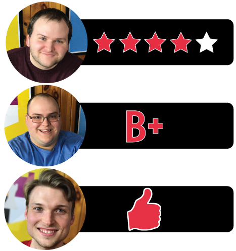

D reviews Ticket to Ride: Europe
 (Author’s
note: this review is meant to accompany our gameplay video and will not
go in-depth on the game’s rules. If you’re interested in learning how
the game is played, please watch the video. It’s not bad.)
(Author’s
note: this review is meant to accompany our gameplay video and will not
go in-depth on the game’s rules. If you’re interested in learning how
the game is played, please watch the video. It’s not bad.)
I feel kind of silly reviewing a game like Ticket to Ride: Europe. The original Ticket to Ride was an instant classic and is one of only a handful of modern games to have earned a place among the “standard” board games. You know what I mean, the kind of board game you’re likely to find in the toy section at your average department store, like Clue or Life. So yeah, reviewing a Ticket to Ride game is kind of like reviewing a random version of Monopoly – a bit pointless. You know what you’re getting here.
The basics of the gameplay are still the same here as they are in OG Ticket to Ride. You collect cards, you play cards, and you put your trains on the map to make your routes. Tension builds on your opponents’ turns and releases on your own, over and over again, for the entire game. And because it plays so quickly, things are never too nerve-wracking. When you get blocked, of course, it is frustrating, but for the most part the give-and-take of game flow is extremely satisfying. Ticket to Ride: Europe is a very good game because Ticket to Ride is a very good game.
But what about the new stuff? I’d call it a bit of a mixed bag. On the negative side, I’m not a fan of the “stations” mechanic. These let you use of one of your opponents’ claimed routes for the purposes of completing your Destination Tickets. I feel like they sort of cheapen the game and take away some of the strategy and fun in trying to figure out what routes your opponents are targeting so you can hopefully get them before they can. And since they don’t count towards the longest route bonus but do earn you points if you don’t use them, their usefulness isn’t even all that high.
On a more positive note, I like the new “long route” Destination Tickets, which add another small layer of strategy at the start of the game. My only complaint with these is that the game only comes with six of them, making them a bit less exciting on repeat playthroughs. Also, the new ferry and tunnel routes on the map are a nice addition. The ferries find a new use for the ever-valuable Locomotive cards, while the tunnels provide a nice twist with a logical, thematic explanation. Given the obvious challenges that would have come with building long train tunnels in the early 20th century, it makes sense that building these comes with an added bit of risk involved.
Overall, I’d still take Ticket to Ride over Ticket to Ride: Europe, simply because I prefer the purer, no-frills gameplay of the original. That said, if you enjoy one, you’ll probably enjoy the other. The changes are mostly pretty minor and generally pretty acceptable. And honestly, at this point if you enjoy board games and still haven’t played a Ticket to Ride game, then what are you doing? Go play a Ticket to Ride. Now. Skedaddle.
D’s Rating: Four Stars out of Five.
Will reviews Ticket to Ride: Europe
 By
now, most tabletop gamers have heard of or played one of the many
installments in the Ticket to Ride series. You could argue that, unlike
many board games, Ticket to Ride has earned a “mainstream” status, given
that it can be purchased at most department stores. This series didn’t
get that far because of its longevity, like Sorry; it got that far
because it’s good. It’s that simple: Ticket to Ride is good. And one of
its first sequels, Ticket to Ride: Europe, is similarly enjoyable, if
you’re okay with a few tweaks and additions to the core gameplay.
By
now, most tabletop gamers have heard of or played one of the many
installments in the Ticket to Ride series. You could argue that, unlike
many board games, Ticket to Ride has earned a “mainstream” status, given
that it can be purchased at most department stores. This series didn’t
get that far because of its longevity, like Sorry; it got that far
because it’s good. It’s that simple: Ticket to Ride is good. And one of
its first sequels, Ticket to Ride: Europe, is similarly enjoyable, if
you’re okay with a few tweaks and additions to the core gameplay.
If you’ve played any of the games in this series, then you know that most of Ticket to Ride’s gameplay involves collecting colored cards, playing said cards, and then placing down trains on the corresponding colored spots. All of that remains the same in Ticket to Ride: Europe, but they did amp it up a notch. For instance, there are new “Ferry” and “Tunnel” routes on the board that require extra thought in order to claim. Not only are these new routes generally longer than the average route, but they also necessitate the excessive collecting of one specific color. For example, to complete a Tunnel that’s four spaces long, you need at least four cards of the same color, but you really need five or six. Why? After a Tunnel is played, three cards are immediately drawn from the deck and played face up. If one or more of those cards is the same color as the one you used to complete the Tunnel, then you’ll need to play more cards of that color to successfully finish the route. This adds some intensity and stakes to the proceedings that the original game otherwise missed out on. In other words, Ferries and Tunnels are useful and entertaining additions to the gameplay.
On the other hand, I’m less keen on one of the other add-ons to Ticket to Ride: Europe. I’m talking about the “Train Station” mechanic, which allows players to continue through crowded junctions they would’ve otherwise had to avoid in Ticket to Ride. I agree with the sentiment that blocking someone is part of the core experience of this series, so providing the players with a loophole out of a block is kind of stupid. Not only that, building a Station is way too cheap – the first one costs one card, the second one two, and so on. I’d be more okay with this mechanic if constructing one was more of a burden on the player doing so. Also, in a game with fewer than four players, these “Stations” are completely unnecessary as they’re rarely utilized.
Actually, there’s not much else to say about Ticket to Ride: Europe, other than that the game left me wanting more, which is probably a good thing. Sure, I wanted to play it more, but I also wanted a few more alterations to the old but reliable gameplay. And I wanted more route cards, especially since there are only a handful of the new, longer routes included with the game. Luckily for me, there are many more versions of Ticket to Ride out there, so I can get more if I truly want it. As I pointed out earlier, this series is just plain good, so check it out if you haven’t already.
I give Ticket to Ride: Europe a: B+
Graham reviews Ticket to Ride: Europe
 Ticket
to Ride: Europe is Days of Wonder’s second iteration of their Ticket to
Ride series. Since the original game won Spiel Des Jahres in 2004, it
has become one of the most popular tabletop games of the last decade and
has established itself as a staple of the industry.
Ticket
to Ride: Europe is Days of Wonder’s second iteration of their Ticket to
Ride series. Since the original game won Spiel Des Jahres in 2004, it
has become one of the most popular tabletop games of the last decade and
has established itself as a staple of the industry.
For those who are not familiar with the game, in Ticket to Ride, players compete by trying to build train routes from one city to another. You get victory points for each route you build, as well as by having the longest route and building the routes shown on your destination cards. In every version, the designer (Alan R. Moon) typically modified the game to incorporate a new mechanic or feature. In Ticket to Ride: Europe, he introduced ‘Stations’. These stations allow you to use an opponent’s existing route. So if an opponent has played a route that you needed for your destination card, you can place a station on two adjacent cities and use this as your route. He also added the “Long Route” destination cards that span across several cities and require a significant number of trains to complete.
I enjoy playing Ticket to Ride games. They’re very easy to grasp, the gameplay moves quickly, and they still require a bit of thought and strategy. Each turn, you have a choice to either pick up cards or construct a set of trains. To build, you need to match the color and number of trains in the route. The game’s strategy comes down to the balance between holding cards and playing your routes. You don’t want to give away information on where you’re planning on building your routes, but if you wait too long, you may miss your chance to build at all.
Everything I said above can be said for any Ticket to Ride Game. As I mentioned, in Ticket to Ride: Europe, they added the stations and “long route” destination cards. I think both of these new features provide value to the game. Without the stations, it becomes too easy to block someones route and ruin their entire game. The “long route” destination cards are great because it is a high risk, high reward card. If you can successfully complete this route, you can get a nice chunk of victory points, but if you fail, it will pretty much lose you the game.
It’s always impressive when you can still enjoy a game 10 to 15 years after its release. It’s a testament to the Ticket to Ride’s base mechanics and theme. Ticket to Ride: Europe is just another good installment of the series. I will never be one to go out and purchase every game in this series, but I probably won’t ever turn down an opportunity to play one. I give Ticket to Ride: Europe one thumb up.

Leave a Reply
You must be logged in to post a comment.